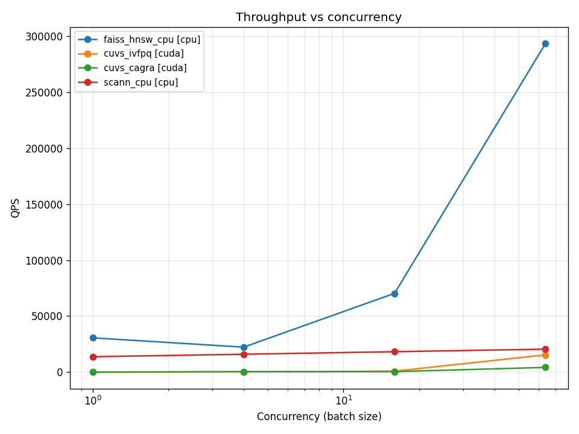
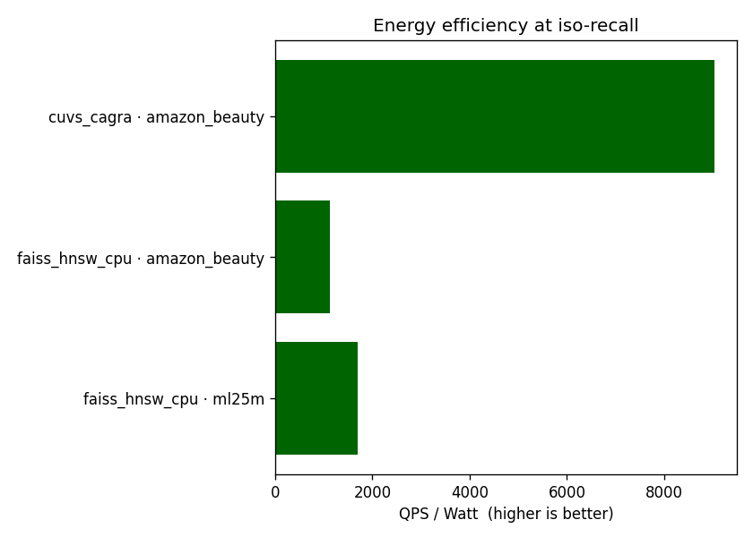

이 파일은
scripts/99_make_report.sh가 자동 생성합니다. 직접 편집 하지 마세요. 메트릭 정의는01_metric_design.md, 방법론은03_baseline_methodology.md참조.
각 (dataset, retriever) 조합에서 Recall@10 vs exact 가 가장 높은 grid 점 의 결과 (동일 recall 이면 QPS 가 더 큰 쪽 선택).
| Dataset | Retriever | Device | Recall@10 (vs exact) | Recall@10 (vs GT) | NDCG@10 | QPS (max c) | P99 ms | $/1M | W/QPS |
|---|---|---|---|---|---|---|---|---|---|
| amazon_beauty | cuvs_cagra | cuda | 0.9993 | 0.0077 | 0.0048 | 13,839 | 12.38 | $0.0984 | 0.00 |
| amazon_beauty | cuvs_ivfpq | cuda | 0.5477 | 0.0076 | 0.0050 | 11,599 | 6.97 | $0.1173 | 0.00 |
| amazon_beauty | faiss_hnsw_cpu | cpu | 0.9973 | 0.0077 | 0.0048 | 38,711 | 1.15 | $0.0102 | 0.00 |
| amazon_beauty | scann_cpu | cpu | 0.9874 | 0.0077 | 0.0048 | 5,196 | 0.51 | $0.0759 | 0.02 |
| ml25m | cuvs_cagra | cuda | 1.0000 | 0.0195 | 0.1161 | 4,469 | 77.15 | $0.3046 | 0.02 |
| ml25m | cuvs_ivfpq | cuda | 0.4649 | 0.0231 | 0.1304 | 1,055 | 61.03 | $0.9695 | 0.05 |
| ml25m | faiss_hnsw_cpu | cpu | 1.0000 | 0.0195 | 0.1161 | 189,739 | 0.18 | $0.0021 | 0.00 |
각 dataset 안에서 가장 느린 retriever 를 1× 로 두고, 다른 retriever 의 QPS 배수.
| Dataset | Retriever | Device | QPS | Speedup vs slowest |
|---|---|---|---|---|
| amazon_beauty | scann_cpu | cpu | 5,196 | 1.00× |
| amazon_beauty | cuvs_cagra | cuda | 14,909 | 2.87× |
| amazon_beauty | faiss_hnsw_cpu | cpu | 102,126 | 19.65× |
| ml25m | cuvs_cagra | cuda | 4,469 | 1.00× |
| ml25m | faiss_hnsw_cpu | cpu | 332,176 | 74.33× |
곡선의 점선은 retriever × dataset 별 Pareto frontier. 빨간 점선은
iso-recall = 0.95 비교 기준선 (reports/01_metric_design.md §4.1).




전력 측정이 가능한 경우에만 표시. CPU 만 사용한 retriever 는 보통 NVML 샘플링 결과가 0 이라 제외된다.
results/<exp_id>/metrics.jsonresults/<exp_id>/aggregate.csvresults/<exp_id>/hardware.jsonconfigs/cost_model.yaml본 자동 생성 결과는 ML-25M sanity check 단계의 측정이다. 본 표의 절대
값보다 retriever × hardware 간 상대 비교 에 의미를 둔다. 그래도
Recall@10 vs ground truth 가 낮다면 모델 학습이 부족한 신호이며,
Recall@10 vs exact 는 ANN 알고리즘 자체의 정확도라 모델 품질과 독립.